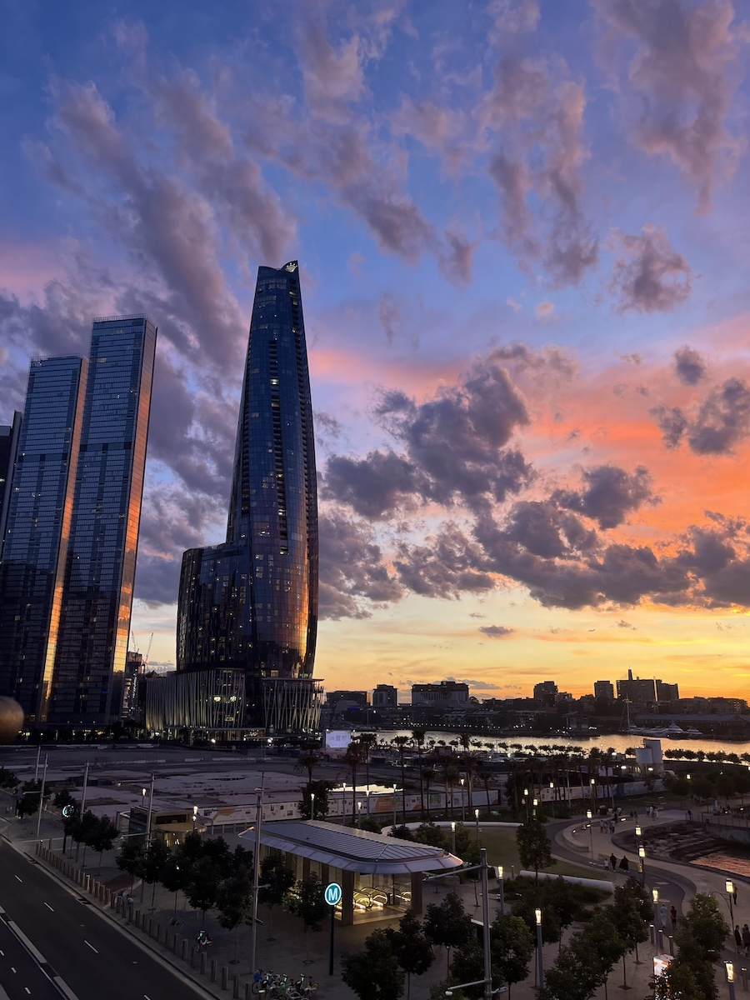

Travel

Australia
In 2025, I took a trip to the great down under with my family. We visited Sydney for a few days, drove to Canberra, and then on to Melbourne, before driving back to catch our return flight.
I especially enjoyed the change in season. We traveled in December, which is late spring in the Southern Hemisphere. The sudden change of pace to shorts weather, a change even from Texas weather, was a welcome experience.
Our first night there was unfortunately the evening of the tragic Bondi Beach shooting. We realized in retrospect our original plans could have taken us there around that time. Later in the week, we took the opportunity to visit the memorial and leave a token of our sorrow.
Sydney quickly became one of my favorite cities. But what sticks with me most is the memories I made with my family exploring it together.